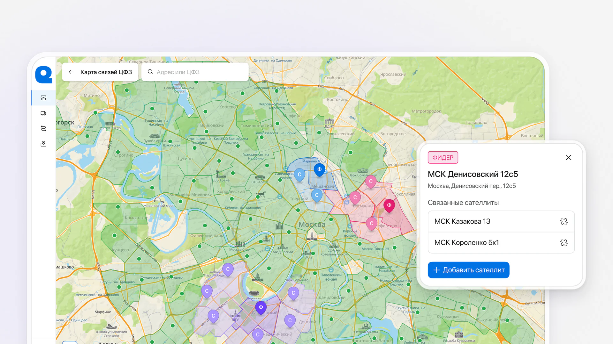
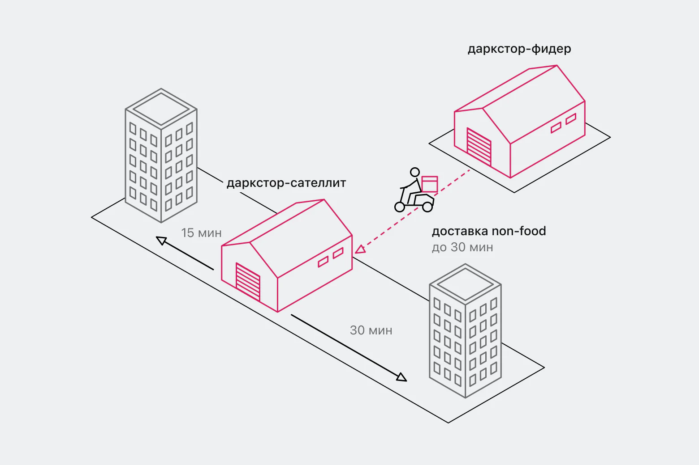
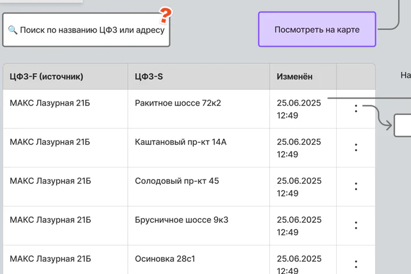
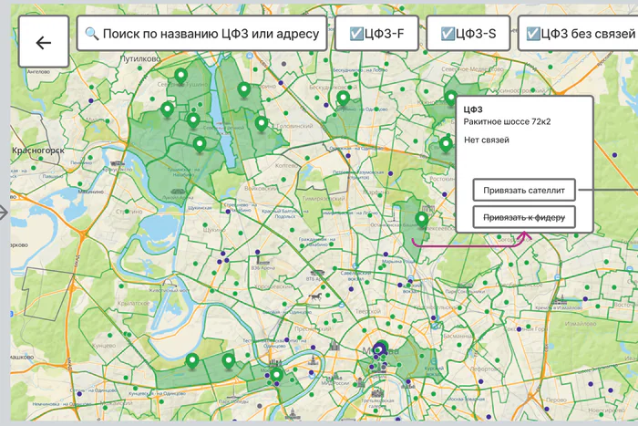
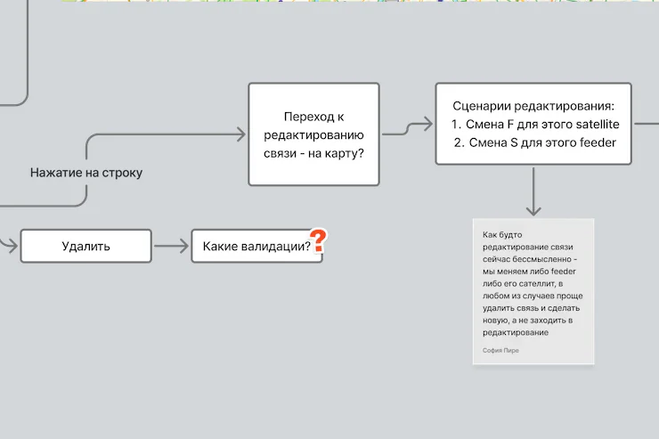
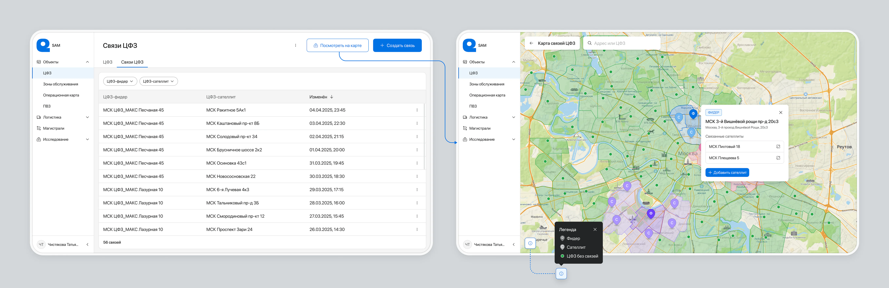
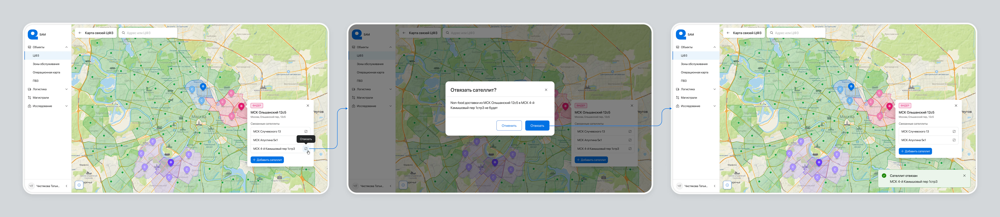

Связи дарксторов: как связать соседние склады, чтобы возить товары из двух точек
Внутренний B2E-инструмент Самоката для логистики. Спроектировала раздел, где операционный отдел сам связывает склады на карте и в таблице, без заявок в поддержку. По итогам UX-теста добавила создание связей из таблицы.

Контекст
Продукт управления логистической сетью SAM (Service Area Management) — внутренний веб-инструмент Самоката: сеть дарксторов, их зоны обслуживания на карте и связи между складами. Дарксторы в Самокате называют ЦФЗ, центрами формирования заказов. Фичу «Связи дарксторов» я проектировала под новое направление: доставку одного заказа сразу с двух складов.
У Самоката есть непродуктовые товары (non-food): бытовая химия, товары для дома, красота. Такие товары раньше можно было заказать только в зоне того даркстора, где они лежат. В новой схеме non-food хранит один даркстор в группе, это фидер. Соседние дарксторы становятся его сателлитами, курьер привозит им non-food от фидера, и клиенты сателлитов тоже могут его заказать.

Проблема
Чтобы схема работала, кто-то должен решать, какой даркстор чей фидер. Единого места для этого не было.
Процесс
На входе было только общее описание фичи с бизнес-логикой «фидер → сателлиты». Пользователей раздела ещё не определили, а на дизайн первой итерации было две недели.
Фидер назначается самой привязкой
Связывать на карте мы с продуктовой командой придумали на дискавери. Я сделала lo-fi-наброски и продумала логику. Пользователь находит фидер и отмечает на карте соседние дарксторы, они становятся сателлитами. Отдельного шага «назначить фидер» я делать не стала. Даркстор становится фидером, когда к нему привязывают сателлиты.

1
2
3Сценарии прошли, вопросы возникли в двух местах
Подготовила исследование: прототип, гипотезы, задания и бриф для UX-исследователя, который модерировал тест. Часть встреч я наблюдала сама, параллельно вела ещё одну фичу. Тест прошли пять сотрудников операционного управления: руководитель и его подчинённые.
О фиче знал только руководитель. Для части его сотрудников, прямых пользователей, тест стал открытием, что связями будут заниматься именно они. Проверяли, понятны ли карта и термины «фидер/сателлит» и проходят ли сценарии связывания, отвязывания и редактирования. Ключевые гипотезы подтвердились: респонденты проходили сценарии самостоятельно.
| Гипотеза | АлександрА | АнастасияАн | ДианаД | МарияМ | ЕкатеринаЕ | |
|---|---|---|---|---|---|---|
| Создание связи | ||||||
| Понимает термины «фидер» и «сателлит» | ✓ | ✓ | ✕ | ✓ | ✓ | 4/5 |
| Находит кнопку «Посмотреть на карте» | ✕ | ✕ | ✓ | ✕ | ✕ | 1/5 |
| Понимает, что зелёная точка означает даркстор без связи | ✓ | ✕ | ✕ | ✕ | ✕ | 1/5 |
| Узнаёт пин фидера и его зону | ✓ | ✓ | ✓ | ✓ | ✓ | 5/5 |
| Начинает связывание кнопкой «Привязать сателлит» | ✓ | ✓ | ✓ | ✕ | ✓ | 4/5 |
| Добавляет соседние дарксторы кликом по точкам | ✓ | ✓ | ✓ | ✓ | ✓ | 5/5 |
| Убирает даркстор из связи крестиком в чипсе | ✓ | ✓ | ✓ | ✓ | ✓ | 5/5 |
| Сохраняет связь | ✓ | ✓ | ✓ | ✓ | ✓ | 5/5 |
| Понимает, что связь создана и даркстор стал фидером | ✓ | ✓ | ✓ | ✓ | ✓ | 5/5 |
| Добавление сателлита | ||||||
| Добавляет ещё один сателлит | ✓ | ✓ | ✕ | ✓ | ✓ | 4/5 |
| Отвязывание | ||||||
| Отвязывает сателлит кнопкой с иконкой | ✓ | ✓ | ✕ | ✓ | ✓ | 4/5 |
| Редактирование | ||||||
| Открывает редактирование через меню | ✓ | ✓ | ✓ | ✓ | ✓ | 5/5 |
| Меняет даркстор через селект | ✓ | ✓ | ✓ | ✓ | ✓ | 5/5 |
Две находки теста я доработала, три оставила как есть.
| Что заметили на тесте | Что сделала |
|---|---|
| Респонденты искали дарксторы через поиск и предложили привязывать сателлиты по названию. | доработала Добавила создание связи из таблицы с поиском по названию. |
| Одной респондентке кнопки «Привязать» и «Отвязать» показались похожими. | доработала Добавила тултип «Отвязать». Иконку оставила: кнопку отвязки нашли 4 из 5 респондентов. |
| 4 из 5 не сразу нашли кнопку «Посмотреть на карте» и не поняли, что зелёная точка означает даркстор без связи. | оставила Все респонденты видели SAM впервые. Кнопку достаточно найти один раз, а смысл зелёной точки объясняет легенда. |
| Респондентка начала привязку нового даркстора с его собственной карточки и заметила, что так можно по ошибке сделать его фидером. | оставила 4 из 5 сразу пошли через карточку фидера, а в режиме связывания панель показывает, какой даркстор станет фидером, ещё до подтверждения. |
| Респондентка опасалась, что если её отвлекут во время редактирования, часть изменений сохранится, а часть нет. | оставила Изменения применяются только по кнопке «Сохранить», поэтому частично связь сохраниться не может. |
Один паттерн на создание и редактирование
Создание связи из таблицы я перенесла во вторую итерацию, в первую у разработки не было ресурса. Для создания взяла тот же паттерн, что в редактировании. Он уже был в разделе и понятен по аналогии, а разработке не пришлось делать ничего нового.
Решение
Сначала таблица, карта по кнопке
Таблица и карта показывают одни и те же связи. Раздел открывается таблицей: в ней удобнее работать с большим списком дарксторов. Карта открывается по кнопке и показывает, где находятся дарксторы. Найти, отфильтровать и отредактировать связь можно и в таблице, и на карте.

При связывании на карте остаются только свободные дарксторы
Связь можно создать на карте или из таблицы, через тот же селект, что в редактировании. В режиме связывания я убрала с карты пины уже связанных дарксторов, чтобы они не отвлекали и на них не хотелось нажать. Какой даркстор станет фидером, панель показывает ещё до подтверждения.
Перед отвязкой видно, что произойдёт
Текст окна подтверждения я написала через результат действия: из какого фидера в какой сателлит перестанут возить non-food. Отвязать сателлит можно из карточки фидера или из карточки самого сателлита. Если отвязать последний сателлит, группа распадается. Ниже первый сценарий.

Результат
Фича вышла в прод.
- Процесс. Сотрудники операционного управления настраивают связи сами, без заявок в поддержку.
- Данные. Связи хранятся в одном месте, и смежные системы получают их из SAM.
- Запрос из теста. После того как появилось создание из таблицы, сотрудники говорили, что работать стало проще.
Что сделала бы иначе
Сейчас я бы поменяла итерации местами: сначала выпустила создание связей в таблице, а карту добавила потом. Сотрудникам обычно приходит готовый список дарксторов, и в таблице его быстрее разнести, чем искать точки на карте.